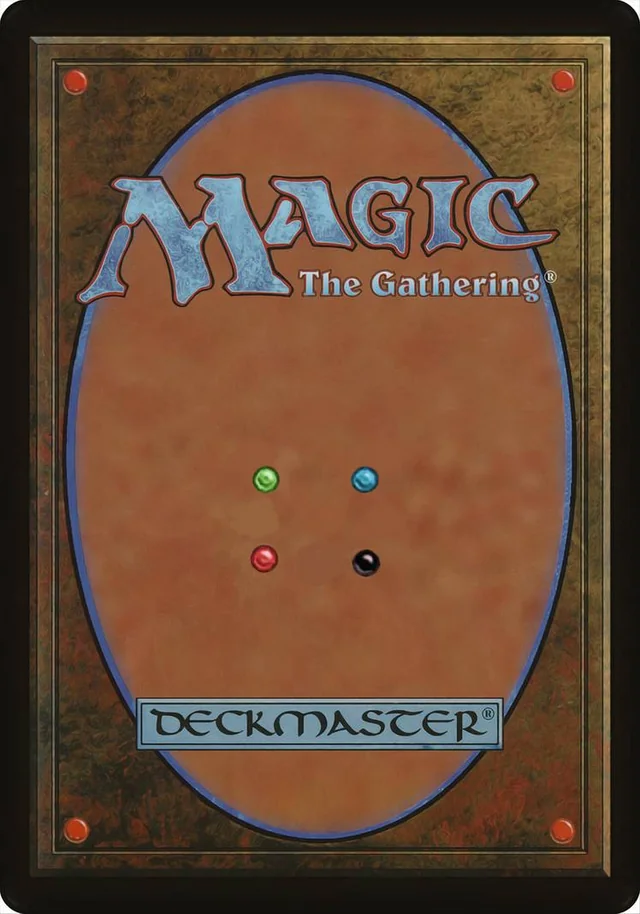

About the Random Magic Card Viewer
Welcome to the Random Magic Card Viewer, an interactive web application that allows you to explore the vast world of Magic: The Gathering cards. This project provides a simple and engaging way to discover random Magic cards and learn more about their details.
Features
- Get Random Card Button: Click the "Get Random Card" button to fetch a randomly selected Magic card from the vast collection available.
- Card Information: Explore various details of the selected card, including its name, type, mana cost, colors, set, rarity, card text, and power/toughness (if applicable).
- Card Image: Visualize the card with a high-quality image to get a better look at its design and artwork.
How to Use
- Click the "Get Random Card" button to initiate the magic and reveal a new card.
- Explore the displayed information to learn more about the selected card.
- Enjoy the diverse and intriguing world of Magic: The Gathering!
Why Random Magic Card Viewer?
Whether you're a seasoned Magic player or a newcomer to the game, the Random Magic Card Viewer provides a fun and educational experience. Discover new cards, learn about their characteristics, and appreciate the rich lore and artistry behind each Magic card. Start your journey into the world of Magic now and let the randomness unfold before your eyes!